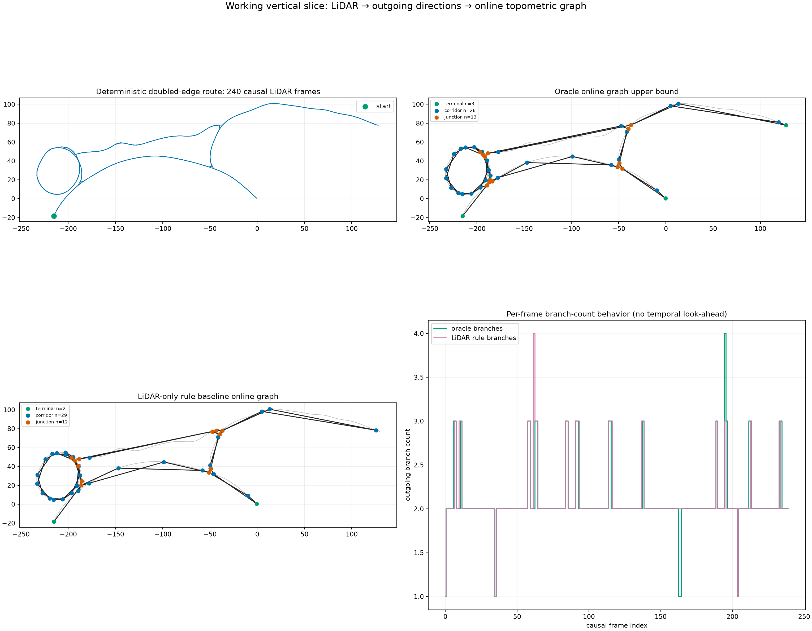
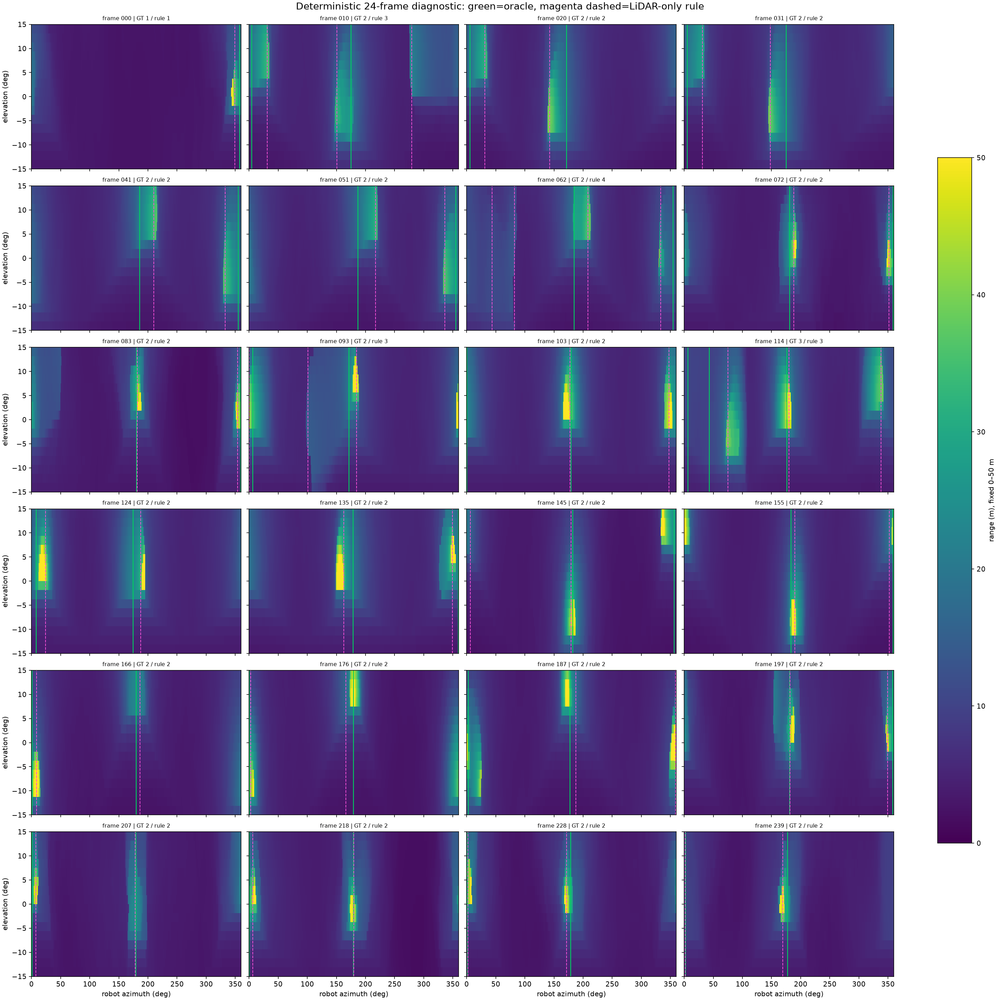

汇报时间：2026-08-10 至 2026-08-11 | 当前：Phase 1 / Gate 0
Cano, Tardioli, Mosteo (2026)：Autonomous Navigation in Large-Scale Underground Environments Based on a Purely Topological Understanding of Tunnel Networks。
| 模块 | 对方怎么做 | 对我们的意义 |
|---|---|---|
| 地图/数据生成 | 先用程序化 tunnel-network grammar 生成地下网络的连接关系；每条 tunnel 由中心线（spline）控制几何生长，再导出 surface mesh。这样完整网络天然提供 junction、出口方向和连通关系的客观真值。 | 它适合作为可控合成监督源：学生只看 LiDAR，完整 graph/spline 只做标签与审计，不进入模型输入。 |
| LiDAR 表示 | 将 VLP-16 的 3D LiDAR 投影成 16×720 depth/range image：16 个垂直线束 × 一圈 720 个方位采样。 | 这种二维表示保留环视角度顺序，计算量低，适合先建立快速、透明的感知 baseline。 |
| CNN 出口检测 | 轻量 2D CNN 从 range image 输出 360° 各方位的出口响应；训练标签来自程序化网络的中心线出口方向。随后以 tracking/hysteresis 把逐帧响应稳定为拓扑事件。 | 论文已经覆盖“程序化地下 LiDAR + CNN 出口检测 + 纯拓扑导航”。我们不能把这一组合本身当创新，而要处理部分观测、不确定性、稳定 exit-stub 图和 M-TARE 全局层替换。 |
| 数据规模 | 50 个程序化地下环境，每个 10,000 样本，共 500,000 样本。 | 当前我们尚处于 5 拓扑合同前；数据规模必须建立在跨拓扑 sensor/teacher 合同通过之后。 |
论文链接：Cano et al., Journal of Field Robotics。相关对比还阅读了 TARE（分层探索）、地下图规划、无监督 junction recognition，以及 PointContrast / traversability SSL。
| 环节 | 结果 | 当前解读 |
|---|---|---|
| 局部出口规则 | Precision 0.748；Recall 0.753；F1 0.750 | 能识别多数分支，但漏检/误检仍明显；这是后续 CNN 应优先改进的地方。 |
| 规则在线图 | 43 nodes / 50 edges / 14 unexplored stubs | 节点、边和未探索出口可随轨迹因果累积。 |
| 同轨迹 oracle 图 | 44 nodes / 50 edges / 12 stubs | 主要差异来自局部出口感知，而不是图的数据结构无法表达。 |


目前得到的是一条能工作的感知—建图接口，而不是已经完成的学习方法。 规则出口检测的 F1 约为 0.75，提供了明确且必要的学习改进目标；图的因果表达和更新已经可运行。下一步是在固定规则、不调参条件下，于 5 个新拓扑、5 个 mesh、250 个 anchor、750 个静态观测上执行合同，检查这些结果能否跨拓扑保持。
正式数据集、训练样本、checkpoint、M-TARE 改动和闭环探索结果当前均为 0。
证据目录：results/prototypes/cano_seed0_lidar_to_topometric_vertical_slice_v2_graph_refined/。动态图回放保留于该目录的 previews/online_topometric_replay.gif。